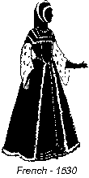
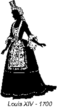
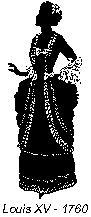
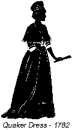
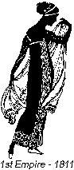
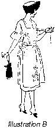
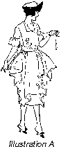

1926—The New-Way Course in Fashionable Clothes-Making
Introduction to Lesson 9—Fashion Silhouette
The Fashion Silhouette
We are going to reveal to you a little secret of clothes-making that simplifies and condenses the details of dress-creation, and that saves a great deal of time and trouble. It is the secret of the silhouette, guarded very carefully by the professional modiste and taught only rarely to the woman in the home who makes her own clothes.
The silhouette, you know, is the basis of all fashion. It is not the trimmings that change—for every season has its tucks and its ruffles, its tunics and its plaits. It is the silhouette that changes, the style outline of the dress or blouse. Glance at the following pages of silhouette. Notice the great change from century to century. See what a vast difference a puffed sleeve or a tight bodice makes upon the silhouette of that era—and hence upon the fashion of that era. Details, you can now readily see, are submerged under the prime consideration of correct silhouette.
But, you ask, of what value is the study of the silhouette to you, who want to make pretty things to wear? What will you gain by studying its principles? True, it is interesting but will it help you with your clothes-making?
You will find that the value of the silhouette to you is twofold. It will show you the way to adapt all styles to your figure, preparing you for the fascinating study of design to come later in the course. And it will reduce the details of dressmaking to merely one definite outline, making the creating of clothes more interesting and extremely more simple than you would have ever thought possible.
Knowledge of the silhouette means that instead of thinking about the waistline and the skirt and the collar, you think only of the outline of the dress. You visualize in your mind the exact outline of the frock which you are later going to develop in silk, or cotton, or wool. You see your dress before you begin it, and are able to adapt the prevailing mode to your own type of figure, emphasizing your "good points."
The Story of Style
Before proceeding with the study of the silhouette, it will be necessary to tell you the story of dress itself. You will find this story interesting, not only because it so closely parallels the history of civilization, but because it contains some very valuable and practical clothes-hints.
It was Cowper who said, "While the world lasts, Fashion will lead it by the nose." And it is really quite true, you know. Didn't Fashion command the Chinese to have tiny feet—and tiny feet they had to have although it meant months of torture to the young child. Didn't it command the monstrous ruff of the Elizabethan period and the dignified wigs of the gentlemen of the Colonial days? Didn't it command the mantle of the patriarch, the toga of the Roman, the turban of the Turk? And even today, doesn't Fashion decree certain whims of style that we must follow—or else be conspicuous?
Let us go far back to the time of the prehistoric cave-woman, when the wearing of clothes first had its inception. We find that the first thought of shame has stirred within her breast and she makes a covering for herself from the skin of a newly killed animal. It is raw and ugly and unpleasant, but she wears it with pride for it is a good skin, impervious alike to the ravages of sun and rain.
How Fashion Was Born
In those days of primitive womanhood there was no such thing as style or fashion. The skins looked exactly alike, and they were thrown over the shoulders in the same convenient manner. Clothes then meant nothing more or less than protection.
But slowly, as the tiny beam of civilization struggled onward and upward, there came a desire for something more than merely a protection against cold and rain. A very intense desire for personal adornment and self-ornamentation developed. It grew slowly into a love of beauty—a natural instinct which has been the very foundation of all civilization. Women began to cover their bodies with beads and fur and tattoos. Clothes began to mean something more than merely a covering. Fashion was born—and it has remained undisputed ruler of the feminine world ever since.
Why didn't the men develop this sense of beauty, you ask? Why didn't the men cover their bodies with ornamentation? Because in their strenuous activities, confined mostly to the hunting of game and the protection of their families against invading enemies, they found that the accumulation of coverings on their bodies hindered them. Simplicity dominated their attire, while to woman was left the development of the decorative art. It was natural that it should be so.
Woman's Inherent Love of Beauty
Thus we find that love of beauty is inherent in all women. Pride of personal appearance is a heritage brought down through generations of slowly developing taste. And we find today that Dress is the means of expressing individuality, that it is woman's means of expressing her ideals, her taste, her personality.
We all know that France very early became the center of Fashion. It was here that elaborate styles were created, that new draperies and lines were invented. The constant, ever-changing vagaries of Style became something in which all the women of the world were keenly interested, and it is just these endless whims of Style that have made the study of dress one of the most curious and fascinating in the world.
Though France jealously guarded its authority in the matter of Style, and though it still remained the center of Fashion, women the world over soon learned to know and appreciate the distinctions of Style. They were not long content to allow others to create their modes for them. They began to make their own dresses, create their own styles, in which were portrayed their own personalities. That is why in her triumphant march through the centuries, Dame Fashion has given more than pretty, charming clothes to the woman; it has given her a keener, finer, more beautiful understanding and appreciation of art in one of its most delightful forms.
Here is quite an excellent costume of the famous Elizabethan era, worthy of the elaborate Queen Elizabeth herself, showing the huge sleeves, monstrous ruff and tiny waist which the women then endured. What is of most interest to the student of costume in this illustration are the cordings on the sleeves, the embroidered border at the bottom of the skirt and the inverted V which reveals the plaited underskirt.
In Illustration II you see an example of middle sixteenth century dress in France. There is a great deal of interest in the sixteenth century for the student of costume. It seems as though Queen Elizabeth with her gaudy crinolines and jewels set the pace for a century of extreme ornamentation. In this illustration, for instance, you see the huge sleeves of ermine and the elaborate jeweled cord. Notice particularly the full-flared skirt and tight bodice. How often fashion reverts to this mode in her march through the centuries!
Illustration III shows you the dress worn during the reign of Louis XIV. That was the very early part of the eighteenth century, you remember. Notice in this costume the embroidered apron effect edged with narrow plaits. And notice also the ruffles in the sleeves and the rever-like folds that reach from the shoulders to a point below the waist-line. It is interesting to see that trains were worn on the skirts in that era.
Plaitings and rufflings and tuckings enjoyed a wide and varied vogue during the reign of Louis XV—also in the eighteenth century. In Illustration IV you see a young Frenchwoman gay in her bouffant frock with its many little plaitings and rufflings. We want you particularly to notice the lines of the dress—how the draperies and trimmings harmonize with the figure. The bows are a predominating feature of late eighteenth century attire in France.
Illustration V shows you the Quaker Dress— a costume worn in the latter part of the eighteenth century. The cape-collar is edged with plaitings—made, no doubt, painstakingly by hand—and the carefully draped skirt ends in a ruffle. The tucks in the skirt prove beyond doubt that our Quaker grandmothers would have been overjoyed with the remarkable attachments that we have today that ruffle and tuck and plait so rapidly and with so little trouble!
In the very early part of the nineteenth century, the empire dress became extremely popular. An excellent example of this type of dress is seen in Illustration VI. The slashed sleeves are particularly interesting because we have just such a style today. The panel of embroidery extending down the front and around the bottom of the skirt is reminiscent of our own panelled frocks not so very long ago. They say that history repeats itself—surely Fashion must too!
The Part That the Silhouette Plays
But you are wondering, no doubt, what part the silhouette plays in this development of Fashion. The keynote to correct dress is yourself, you know, your personality. Your figure, the lines of your face and your body, control the lines of your garment. The most carefully constructed and charming garments will fail to become you if they do not harmonize with your individuality, with your little peculiarities of figure.
Fashion does not always remain the same. Each season brings forth striking new dress innovations—new colorings, new lines, new draperies. What is in vogue today is cast aside tomorrow as "out-of-date." The problem of the home clothes-maker, therefore, is to create styles that are always becoming, always attractive. And it is here that the value of the silhouette is most strikingly portrayed.
There are certain lines, certain draperies that tend to enhance the natural grace and beauty of the wearer and that emphasize that person's individuality. They are lines which are best fitted for the wearer's particular type of beauty, for her particular figure. And it is the study of the silhouette that reveals these lines, that shows you how to readjust the prevailing mode so that it conforms with the lines of your figure and does justice to your "good points."
Adapting Styles to Your Figure
Here is a picture (Illustration A) of a pretty little frock with small pointed tabs adding a touch of trimming at the sides. You would like to have the dress, but let us pretend that you are inclined to be the least bit stout and you do not know whether or not it will be becoming. You know, from Lesson 1, that the tabs have a tendency to make you appear stouter. So you visualize the same dress without the tabs, as shown in Illustration B.
Now glance at these illustrations and see the same two dresses in silhouette. You can see at once the remarkable difference this one slight change in trimming makes. If you are slender, you will choose the dress shown in Illustration C without hesitation; if you are stout, you will choose the one shown in Illustration D. Yet both are developed on the same lines and are similarly styled.
You realize, of course, that your own figure must serve as the basis upon which the silhouette is built. Study yourself in the mirror. Find you "good points" and your "bad points." Decide whether you have large hips or small hips, wide shoulders or narrow shoulders. The makers of ready-to-wear clothes pay no attention to your little peculiarities of figure; they strive only for the style effect. That is why the clothes you buy in the shops may look pretty on others but entirely without charm on you. But in the clothes you make yourself you will be able to impart just the right little touches that your silhouette requires.
In clothes-making, excellent workmanship alone is not enough. Nor is the achievement of attractive style enough. But when you have combined excellent workmanship and attractive style with a silhouette that harmonizes with the lines of your figure—then you have achieved the true triumph of artistic clothes-making.
How to Find YOUR Silhouette
Perhaps if you see your own silhouette, you will better understand the significance of this introductory lesson. We have devised a method, after much experimenting, by which you can find your correct silhouette without trouble.
Draw down the blinds in your sewing room, shut all doors, and make the room absolutely dark. It is much better to find your silhouette at night. Light a candle and place it on the edge of a table. The top of the candle must be exactly the same height as your waistline. If the table is too low, place a book or two underneath the candle to bring it up to the correct height.
Now face a blank wall and walk straight away from the candle to a distance twice as great as your own height. For instance, if you are five feet tall, walk ten feet away from the candle. This will throw a shadow of your correct silhouette on the wall. First study it facing the wall, then turn to the side and study your "profile" silhouette. Any little peculiarities of figure will be instantly detected—and it is then your duty to remember these peculiarities when you are planning the style features of your new dress or blouse. Of course you must wear only tights in finding your silhouette, or close-fitting underwear. Do not wear anything that will conceal the true outline of your figure.
In taking your silhouette, if you find that the outline is not clear and sharp, if it is a little blurred or hazy, take a step forward or backward watching the wall carefully and you will invariably find the exact spot to stop. The best results are obtained by pinning a white sheet against the wall. The candle throws a splendid clear-cut shadow against the white background. Remember that the candle must always be in a line with your waist. If it is above or below it will throw a distorted shadow, and you will not get your correct silhouette.
Correct Silhouette for the Short-Waisted Woman
It is only by studying your figure carefully, and visualizing your own silhouette with that of the dress you intend making that you can achieve correct harmony. We do not know your particular little peculiarities of figure—therefore we cannot tell you exactly what your silhouette should be. But we can tell you about general figures, and you can gauge the lines of your silhouette from what these figures require.
The short-waisted woman, for instance, is usually of generous proportions. She has a full, high bust and very probably a short neck. If she does not exert care in the choice of silhouette—which is, in other words, the choice of a correct style outline—she will present a clumsy, awkward, bulky appearance.
She should avoid yoke lines or cross trimming lines that tend to cut the figure in two, and also tight belts at the waistline. Instead, her silhouette should be based on long, slightly pointed lines that carry the eye down rather than around the figure. It should be remembered that long, vertical lines give the appearance of great height and slimness. The straight up-and-down silhouette is by all means the best for this type of figure.
When One Has a High-Hipped Figure
The short-yoke effect dress tends to emphasize the "bad point" of the high-hip figure. The waistline should be so located that it will impart a well-balanced appearance to the figure—about three inches below the normal waistline is usually the correct place for the belt or waistline. A straight vertical silhouette from the shoulders to the low waistline terminating in a full-plaited or shirred skirt is the most becoming style for this figure.
The woman who is stout will have no trouble whatever with her silhouette if she remembers that up-and-down lines impart slenderness and grace to the figure, while lines that go around the figure, horizontally, tend to accentuate the stoutness. Instead of wearing dresses that are unbecoming, simply because they are "in style," she should adapt that style to suit her proportions and her lines.
A little study of the "secret of the silhouette" will teach you how to determine instantly just which styles, just which lines, will best become you—or the person for whom you are making the dress. You should have no trouble whatever in adapting prevalent modes to your figure, or in visualizing a dress before it is finished and discovering any little discrepancies in outline that will tend to detract from the grace and charm of your figure.
To test your proficiency in the matter of the silhouette, and to see how much you have acquired from this lesson, we wish you to make the following test. We have inserted in the leaves of this book a loose sheet containing five illustrations of dresses, heavily outlined to show the silhouette line. Underneath each illustration, write the type of figure you think the style of dress is best fitted for. Write whether you think a tall, slender person should wear it, or a stout person with a very short neck, etc., and send it to us for correction.
Now, you are going to make a pretty little apron—an attractive apron that you will be proud to wear—an apron that you will be glad to show to your neighbors and tell them you made it all yourself! So we are going to ask you to study the next few lessons carefully, so that you will be all ready to make your apron when you come to it. And remember, the good old proverb—"Practice makes perfect!"